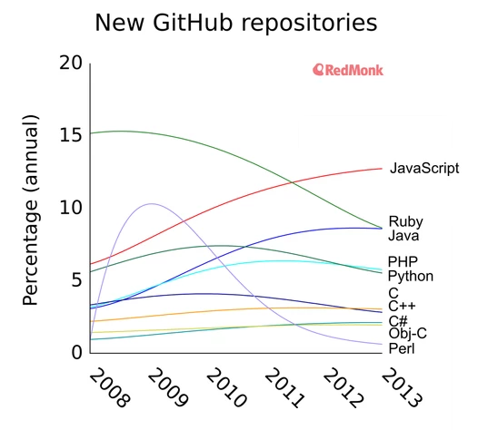

JavaScript's Popularity
In the scope of how fast new coding languages are being created to keep up with our fast-paced technology, JavaScript is pretty ancient. It was created two decades ago by Brendan Eich for Netscape (yeah, remember Netscape?). However, it has especially gained popularity in the past few years to the point that it is now the web's most popular language! Now, how did that happen?

Why So Popular? Is It That Great?
JavaScript is now the most popular language on the web. There are many reasons contributing to its popularity:
- Community - Aside from its age, it still has a very large community of developers who support its use and are trying to find new ways to use it. This makes it a popular language for learning to code, and it is often considered the preferred language for those just beginning to code. Lucky for us beginners, the online community offers resources to make learning easier and forums to share and solve problems with other JS learners and experts alike.
- Abilities - It's original surge in popularity was because it allowed web pages to be dynamic and allowed users to interact with information on their screens. This was and still is huge! It was (well, still is) also client-side rather than server-side, meaning it doesn't require a request to be sent to a server for it to run the code. The client-side advantage is that it is quicker/more lightweight and puts less stress on the server. This is because it is able to run in the browser, and, when I say the browser, I mean just about every single one of 'em!
- Future - Another reason for its popularity is its potential. The aforementioned community has helped to create all sorts of "extras" to enhance JS's use. There are libraries, for example jQuery, that can be added to make writing the code simpler by assigning methods to processes that may take several lines of code if you had to write it all out. Also, you may have noticed that I said it "was" client-side rather than server-side. Well, that's because the potential for JS was widened when Node.js was created. Now, JavaScript can be used for back-end as well as front-end development. That's good news for tech companies because they can "hit two birds with one stone," so to speak, because they can reallocate their employees who know JS to back-end if they need to and then back into front-end when that's what's needed. Needless to say, its future is bright and it doesn't look like JS is going anywhere.
Is there a downside?...
There are, of course, those who don't like JavaScript. It could be because of its object-oriented structure or maybe even because it's an older language. I've seen issues like rendering varying on different browsers, which would be a pretty annoying thing to deal with, and security issues for the user, which could potentially be the worst user-experience if you encounter some especially malicious code. The only thing is that, for each of the downsides, I also always found someone (likely a member of the aforementioned JS community) saying that the problem can be fixed. So, I think the only downsides really are its built-in limitations, but even those are being overcome thanks to advancements (like client --> server via Node.js) to this twenty-year-old language from within its ever-growing, supportive community.